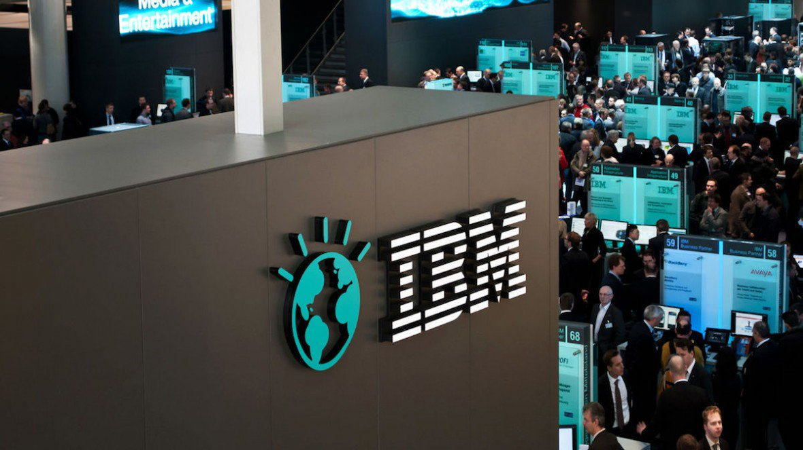

Work
Some words about my Work
| Institution | Description | Year |
|---|---|---|
| IBM | Software Engineer - Devops Being part of IBM's existing devops team, my responsibilities were divided evenly between supporting current operations workload and creating the tools, automation, and best-practices to support IBM's next generation platform. This includes working in support of application development teams to enable rapid development and deployment of new features and components. I was an ideal candidate with a passion for automation, distributed systems and new tools, as well as a deep understanding of continuous deployment best practices. |
2012-2014 |
|  | ||
| J P Morgan | Software Engineer Java - Associate As a member of our Software Engineering Group I dived head-first into creating innovative solutions that advance businesses and careers. I joined an inspiring and curious team of technologists dedicated to improving the design, analytics, development, coding, testing and application programming that goes into creating high quality software and new products. I was tasked with keeping the team and other key stakeholders up to speed on the progress of what’s being developed. Coming in with an understanding of the importance of end-to-end software development-such as Agile frameworks-is key. And best of all, I was working with and sharing ideas, information and innovation with our global team of technologists from all over the world. |
2014-2018 |

|
||
| Software Engineering Manager Project: Sirenum Like Google's own ambitions, the work of a Software Engineer (SWE) goes way beyond just Search. SWE Managers have not only the technical chops to roll up their sleeves and provide technical leadership to major projects, but also manage a team of engineers. I not only optimize my own code but make sure engineers are able to optimize theirs. As a SWE Manager I manage my project goals, contribute to product strategy and help develop my team. SWE teams work all across the company, in areas such as information retrieval, artificial intelligence, natural language processing, distributed computing, large-scale system design, networking, security, data compression, user interface design; the list goes on and is growing every day. Operating with scale and speed, our world-class software engineers are just getting started -- and as a manager, I guide the way. Click below for further information... Project Sirenum |
2018-Present | |